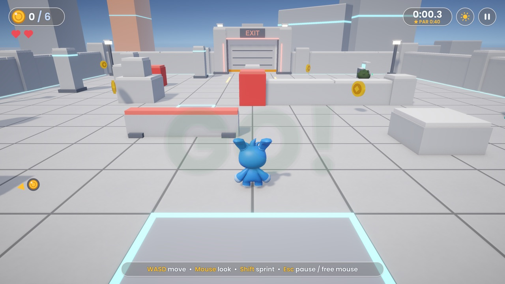
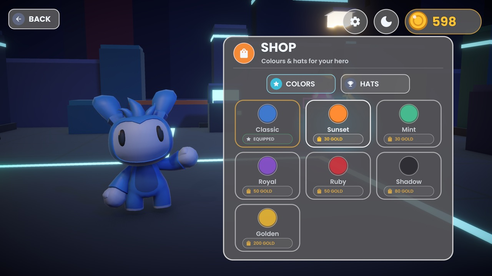

Unity 6 tutorial · 3D · for beginners
GOLD RUSH
A complete third-person 3D game for phones and computers. Grab every gold coin, dodge the monsters, and escape through the exit gate. You will take the finished game apart, one system at a time, and change it.

What you will learn
- How a level is made: hand-built scenes and levels generated from a seed
- Move a hero with a
CharacterControllerand follow it with an orbit camera - Import 3D characters and build an Animator Controller with a blend tree from code
- Monster AI with a state machine, vision cones and the NavMesh
- Game rules: timer, hearts, stars, pause, win and lose
- Save progress with
PlayerPrefsand JSON, and run a shop - Build the whole UI from C#: canvases, anchors, buttons, dialogs
- Touch controls: a virtual joystick and drag-to-look
- Day/night lighting, post-processing, particles and tweens
- Make sound effects and music from maths, with no audio files
How to start
- Install Unity 6000.6.10f1 or newer with Unity Hub. For phone builds, also add Android Build Support and/or iOS Build Support.
- Unity Hub → Add → Add project from disk → choose the
GoldRushDemofolder. - In the top menu, choose Gold Rush → Play. If anything looks pink or broken, run Gold Rush → Setup Project first.
Course map
Do the parts in order. The topics follow the order in which the game was first built: a map and a walking character, then characters, then gold and enemies, then the menu and win/lose rules, then the joystick, then polish.
The arena and a walking hero
Scenes, hand-made and generated levels, the CharacterController, sprint and stamina, the third-person camera.
Characters and animation
Importing models, an Animator Controller and blend tree made from code, colours, hats and the name badge.
Gold and monsters
Coins, power-ups and the exit gate. Monster AI: the NavMesh, a 6-state machine, and vision.
Rules, menu, win and lose
Game states, hearts and stars, pause, the save file, the menu and shop, and UI built from code.
Mobile controls
The virtual joystick, drag-to-look, testing touch in the Simulator, and building for Android and iOS.
Day, night, sound and effects
Blending day and night, sound and music made from maths, particles, and UI tweens.
Troubleshooting & glossary
Something does not work? Start with Troubleshooting. A new word? See the Glossary.
The game
| Level | Name | Gold | Monsters | Par | Time of day |
|---|---|---|---|---|---|
| 1 | Training Yard | 6 | 2 slimes | 0:40 | Day |
| 2 | Ghost Alley | 8 | 2 slimes, 1 ghost | 1:00 | Day |
| 3 | King's Vault | 10 | 2 slimes, 2 ghosts, 2 Mushroom Kings | 1:25 | Night |
| 4 | Gold Fever | 13 | 3 slimes, 3 ghosts, 2 Mushroom Kings | 1:55 | Night |
| ★ | Daily Rush | 7–12 | A new mix every day | varies | Night |
- Collect all the gold to open the EXIT gate, then run through it.
- You have 2 hearts. A monster touch costs one.
- Stars: ① finish ② beat the par time ③ do not get hit.
- Your gold is saved. Spend it in the Shop on colours and hats.
- Power-ups: SPEED (faster), GHOST (monsters cannot see you), MAGNET (coins fly to you).




For teachers
The Gold Rush menu in the Unity menu bar has tools for preparing and checking lessons:
| Menu | What it does |
|---|---|
| Gold Rush → Setup Project | Creates the materials, animator controllers, missing scenes and build settings, and sets landscape orientation. Safe to run again. |
| Gold Rush → Play | Starts from the main menu, whatever scene is open. |
| Gold Rush → Run Smoke Test | Plays through the game by itself and saves screenshots to Temp/gr_smoke/. Good for checking a student's project still works. |
| Gold Rush → Render Character Preview | Saves pictures of the characters to Temp/gr_preview/. |
| Gold Rush → Reset Save Data | Deletes the save: no gold, only Level 1 unlocked. |
| Gold Rush → Give 500 Gold (debug) | For testing the shop. |
| Gold Rush → Level Design → Rebuild Level Scenes (overwrites!) | Regenerates Level1–Level4.unity from the generator. Overwrites hand edits. |
| Gold Rush → Level Design → Rebuild Prefab Palette | Rebuilds the drag-and-drop prefabs in Prefabs/Level/ and the day/night palette. |
Every guide is also a printable PDF (link at the top of each page). This site works offline: share the whole Docs folder and open index.html.
Credits: characters by Quaternius (CC0). Font Poppins (SIL Open Font License). Icons: Material Icons by Google (Apache License 2.0). Code, levels, UI, sound effects and music: made for this project.